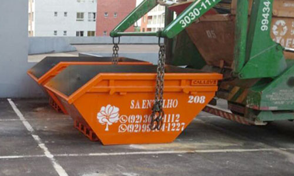
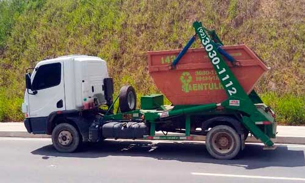

Coleta de entulho
Caçamba estacionária entregue na sua obra. Você enche no seu ritmo e a gente retira. Resíduo de construção, demolição e reforma.
Pedir caçambaManaus · Amazonas
Retirada de resíduos de construção civil e material reciclável com caçamba estacionária e caminhão VUC, em toda Manaus.
O que fazemos
Caçamba em perfeito estado, caminhão adequado, motorista treinado e destinação licenciada. Da obra pequena ao condomínio.
Caçamba estacionária entregue na sua obra. Você enche no seu ritmo e a gente retira. Resíduo de construção, demolição e reforma.
Pedir caçambaPara rua estreita, garagem baixa e centro apertado, onde o caminhão grande não entra. Pioneira em Manaus com esse caminhão.
Falar sobre o VUCMaterial reciclável recolhido e separado, com destinação correta em vez de ir misturado para o aterro.
Falar sobre recicláveisSucção e limpeza de fossa, feitas antes de transbordar e não depois. Atendimento residencial e comercial.
Agendar limpeza
Como funciona
A caçamba fica na sua rua sem virar um problema seu, porque a destinação é licenciada e documentada do começo ao fim.
WhatsApp ou telefone. Diga o endereço e o tipo de material.
Posicionada onde dá, por motorista treinado, em caixa em bom estado.
Recolhemos a caçamba cheia e levamos o material para o destino correto.
A empresa
A S.A. Entulho é especializada na retirada de resíduos de construção civil e material reciclável através de caçamba estacionária. Conta com equipe de atendimento capacitada e motoristas treinados, caixas de entulho em perfeito estado e caminhões novos e adequados.
Foi criada visando a preservação do meio ambiente, porque sabe a importância da destinação correta dos resíduos. É por isso que cada retirada é documentada: o que sai da sua obra tem para onde ir.

Contato
Chame no WhatsApp com o endereço e o tipo de material. Atendemos toda Manaus.